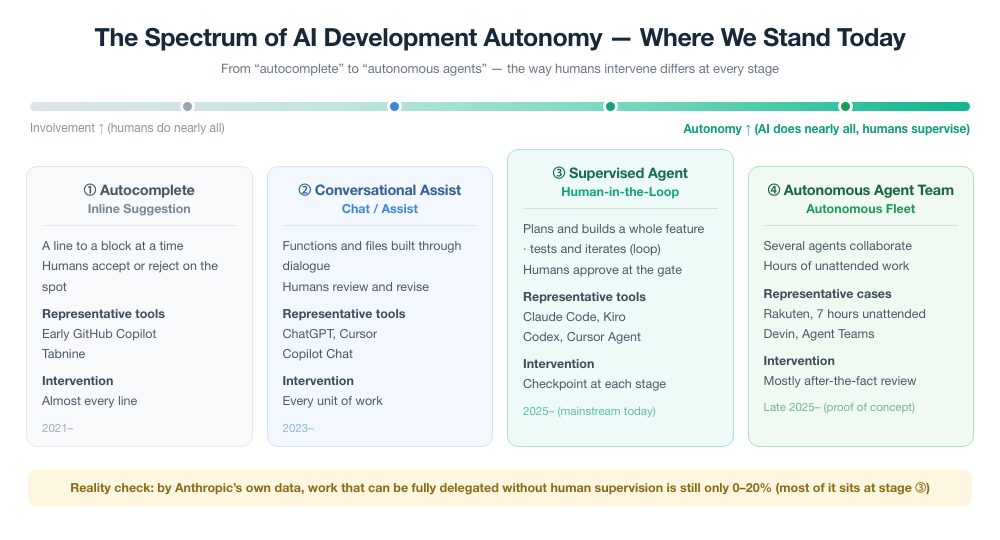
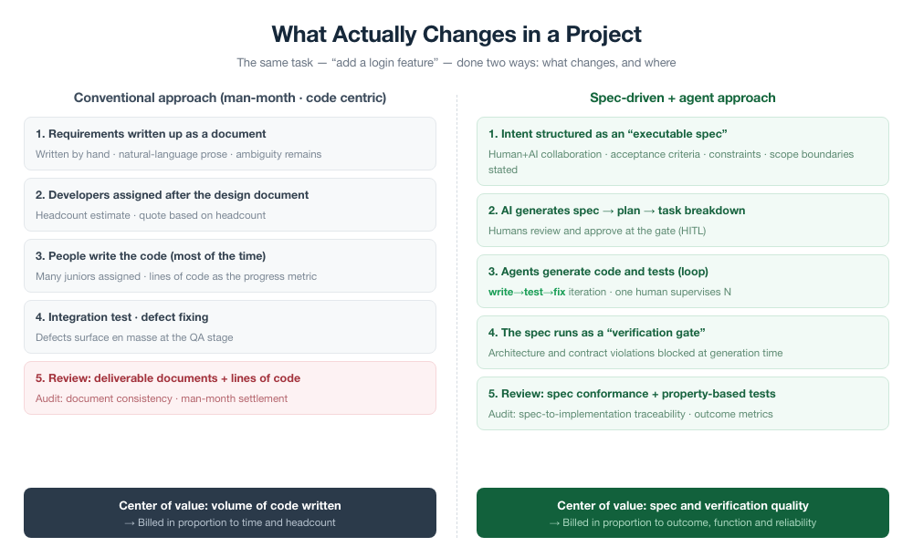
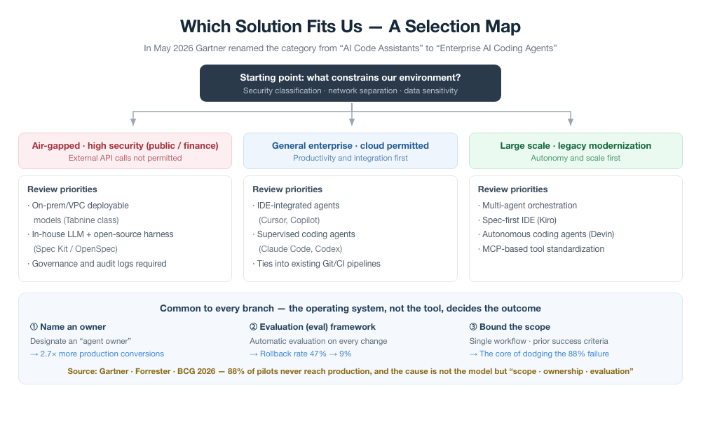
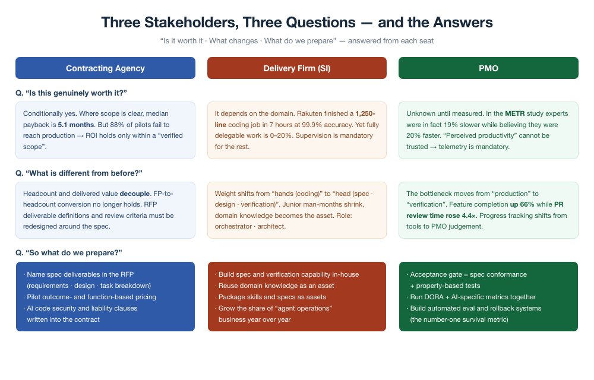
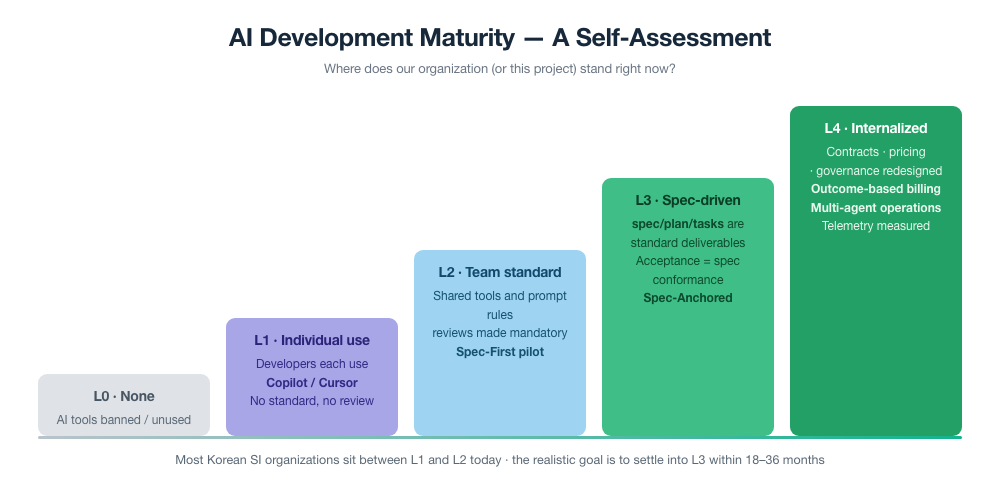

The Present and Future of AI-Driven Development
The Present and Future of AI-Driven Development
How far has it come, is it ready for my project, what changes if I adopt it, and which solution should I choose? Data-backed answers to the questions of contracting agencies, delivery firms, and PMOs.
In June 2025, a machine learning engineer at Rakuten in Japan handed a single task to an AI coding tool: implement a specific activation-vector extraction feature inside vLLM, an open-source library. That library is a massive, multi-language codebase of 12.5 million lines. The tool finished the job in a single seven-hour run with almost no human intervention. The result: 99.9% numerical accuracy against the reference implementation.
This story provokes two opposite reactions. One is the inflated expectation that "developers are no longer needed." The other is the cynical dismissal that "it's just a marketing case study." Neither is accurate. The truth lies in between, and pinpointing exactly where is the most important task for anyone responsible for a project today.
This article makes three promises. First, it shows what level AI development has actually reached, with verifiable cases and data. Second, it draws a concrete picture of what changes, and how, when you apply it to your own project. Third, it answers how contracting agencies, delivery firms, and PMOs, each from their own seat, should choose a solution. To give away the conclusion: what decides the game is not the tool but the operating system built around the tool.
The shift discussed here is not one vendor's story; it is the direction of the entire market. That said, at the end of each part we briefly note where uEngine Solutions' AI-Driven Development product line — Robo Architect, Robo Analyzer, Robo Modernizer, and DreamVibe — answers this trend, to close the gap between theory and execution.
PART 1Exactly where does AI development stand today?
The vague statement "AI writes code" is useless. The question that matters in practice is "how autonomously, on what, and with how much trust can we delegate?" Laid out as a spectrum of autonomy, our current position comes into sharp focus.

At the far left, (1) Autocomplete is what we have grown used to over the past two or three years. It suggests a line, at most a block, and the human accepts or rejects it on the spot. (2) Conversational assistance, like ChatGPT or Cursor, produces functions and files through dialogue, but a human reviews and fixes the result. Most organizations have already experienced up to this point.
What has actually become mainstream today is (3) supervised agents. Given a task such as "add a login feature," a tool at this stage plans on its own, writes code, runs tests, and fixes failures, repeating in a loop. Instead of reading every line, the human approves at predefined gates. Claude Code, AWS Kiro, OpenAI Codex, and Cursor Agent all sit here. Rakuten's seven-hour run is a dramatic demonstration of exactly this stage's capability.
Unlike a chatbot that simply returns an answer, an agent is an AI that takes a goal, breaks it into steps on its own, calls tools directly (terminal, files, tests), and decides its next action based on the results. Forrester treats this as a separate category it calls the "TuringBot." The key is "agency" that goes beyond "assist."
At the far right, (4) Autonomous agent teams is the stage where multiple agents collaborate like a team and work unattended for hours at a time. Devin and Claude's Agent Teams are aimed here. But this stage is still "proof in progress," not "reached." This distinction is critically important.
Reality check — the sobering numbers behind the case study
Looking at the Rakuten case alone, it is easy to conclude that every task can be delegated. Yet Anthropic, the maker of that very tool, analyzed its own usage data and reached a conclusion pointing in the opposite direction.
Understanding this asymmetry is the key. AI agents deliver exceptional speed on tasks with clear boundaries and automated verification. Note the phrase "99.9% numerical accuracy" in the Rakuten case. The seven-hour unattended run earned trust because the answer could be checked automatically against numbers. Conversely, when the answer is ambiguous, requirements exist only as spoken words, or there is no verification criterion, the same agent produces "plausible but inaccurate" results with high confidence.
So, does productivity really go up?
Here the most dangerous trap appears: the gap between "perceived productivity" and "actual productivity." In July 2025 the research organization METR ran a controlled experiment (RCT). Sixteen experienced open-source developers, averaging more than five years of experience, were given 246 tasks in real repositories.
This does not mean AI is useless. The experiment had a special condition: "senior developers who already knew the codebase deeply, performing familiar tasks." In that case the overhead of explaining to the AI and reviewing its output can exceed the cost of writing it yourself. The real lesson lies elsewhere — judging adoption impact by "feeling faster" inevitably leads to error. Impact must be measured objectively.
Large-scale telemetry paints an even more nuanced picture. In a 2026 report analyzing data from 22,000 developers, after AI adoption feature completion rose 66%, but time spent in code review exploded 4.4x, and high-severity incidents rose 31%. The speed of "producing" code went up, but the bottleneck of "verifying" it grew even larger. We return to this phenomenon in PART 3 as the PMO's central challenge.
Even so, the market has already crossed the tipping point
Just because individual-level measurement is complicated does not mean the macro trend is uncertain. Market-wide adoption has entered an irreversible phase.
| Metric | 2024 | 2025 | 2026 |
|---|---|---|---|
| Apps embedding at least one AI agent | 33% | 58% | 80% |
| Companies running agents in production | 9% | 19% | 31% |
| Share coordinating three or more agents | 1% | 6% | 22% |
| Enterprise monthly LLM spend (YoY) | 1.0× | 3.1× | 7.2× |
| Companies with a designated "agent owner" | 11% | 27% | 56% |
Gartner expects that by 2028, 90% of enterprise software engineers will use AI coding tools (fewer than 14% did in early 2024). In a survey of professional developers, 71% already reported using AI coding agents daily. The time saved per software engineer is estimated at 9.4 hours per week on average. The more symbolic change is that in May 2026 Gartner renamed the category of its Magic Quadrant itself from "AI Code Assistants" to "Enterprise AI Coding Agents." The market's center of gravity has officially shifted from "tools that help" to "agents that work."
PART 2If I use it on my project, what changes and how?
Suppose you have decided to adopt. Then where, concretely, does the project change? To make a real plan you need to see what shifts at each stage — not an abstract "it gets faster." Let's place the same task, "add a login feature," side by side under both approaches.

Change 1 — The order of work flips: from "code first" to "spec first"
In the conventional approach, requirements documents and design documents were written on the assumption that people would read them. So a degree of ambiguity was fine — developers filled the gaps with context. For an AI agent, though, this ambiguity is fatal, because the agent fills gaps with "statistically plausible guesses." Say only "add login," and the agent picks its own reasonable defaults — which are quite likely not what we wanted.
This is why spec-driven development (SDD) emerged. The core idea is simple — before writing code, first pin down what you are building and why in a structured specification that machines can read too. Then place that spec above the code as the "single source of truth."
It combines the "why" of a good PRD (product requirements document) with the "specificity" of a good SRS (software requirements specification). It contains at least six elements — (1) verifiable success states (Outcomes), (2) what must not be built (scope boundaries), (3) non-negotiable constraints and performance criteria, (4) decisions already made (e.g., DB schema), (5) decomposition into fresh units of work, and (6) verification criteria for how it will be audited. Explicitly stating (2), "what must not be built," is the key to preventing agent over-implementation.
Change 2 — The spec becomes a "verification gate," not a "document"
This is the most fundamental change. A traditional spec was a static document effectively abandoned after it was written. In SDD, the spec is a continuously operating verification mechanism. To borrow the phrasing academia (arXiv 2602.00180) and Thoughtworks settled on in early 2026: "Traditional specs are read by humans, but SDD specs are executed as verification gates."
What does that mean? When an agent generates code, unit tests only check whether individual functions work. But the real risk in AI-generated code arises not at the function level but at the system level — violations of architectural principles, subtle mismatches in API contracts, security anti-patterns that cross service boundaries. With the spec as a verification gate, these defects are blocked at the moment the code is generated. This is fundamentally different from the conventional approach, where defects accumulate until integration testing and surface all at once.
The security data explains why this difference matters. Across multiple benchmarks, LLM-generated code contained vulnerabilities at rates from 9.8% to 42.1%. By February 2026, "AI-introduced issues" surviving in production repositories exceeded 110,000. Unit tests alone cannot catch this. That is why spec-based verification gates are needed.
Change 3 — Human work shifts from "1:1 writing" to "1:N supervision"
Previously, one developer wrote their own code directly. In the agent approach, one person supervises several agents at once. Rakuten's manager put it this way — "Delegate four to Claude Code and focus on the remaining one, and you can run five tasks in parallel."
This is not merely a speed gain; it is a qualitative change in role. The developer moves from "the person who types" to "the person who defines intent and verifies results." In 2026 Forrester named this transition the move from "vibe coding" to "vibe engineering" — maturing from throwing off improvised prompts into an engineering discipline that owns the entire lifecycle.
PART 3Which solution, chosen by whom, and how?
Now for the most practical question. There are dozens of tools, and new ones appear every month. What criteria should guide the choice? The starting point of the answer is "what are the constraints of our environment?" In environments like Korea's public sector and finance, where network separation and security classifications apply, this constraint determines everything.

The solution landscape by branch
In air-gapped, high-security environments (public sector/finance), external API calls are often impossible altogether. Here the realistic options are models deployable on-premises or in a VPC (the Tabnine family emphasizes this point), or an in-house LLM topped with an open-source harness (GitHub Spec Kit, OpenSpec). The appearance of enterprise options like IBM Bob on Gartner Peer Insights reflects this demand.
In general enterprise environments where cloud is permitted, the choices are broad. IDE-integrated Cursor or GitHub Copilot, and supervised coding agents such as Claude Code or OpenAI Codex, plug naturally into existing Git and CI pipelines. In the 2026 Gartner Magic Quadrant, GitHub and OpenAI were rated Leaders and Tabnine a Visionary.
If the goal is large-scale legacy modernization, consider multi-agent orchestration, spec-first IDEs (AWS Kiro), autonomous coding agents (Devin), and configurations built on MCP (Model Context Protocol), which standardizes tool connections. As of April 2026, MCP has surpassed 9,400 public servers and become the de facto standard.
So what is different about the 12% that succeed? The data shows a remarkably consistent profile.
- 94% designated an "agent owner" with budget authority and measurable goals. Organizations with an owner had a 2.7x higher rate of transition to production.
- 87% ran automated evaluations (evals) before every prompt, model, or tool change. The rollback rate for agents without automated evals was 47%; with them, 9%.
- 81% narrowly scoped the agent to a single workflow with a binary success criterion, rather than as an "all-purpose assistant."
This yields a direct implication for Korean SI. Half of the effort spent on tool selection should be allocated to designing the operating system. Whatever tool you adopt, with no owner, no evaluation framework, and unbounded scope, you join the 88% of failures. That is the real starting point for solution selection.
PART 4Three stakeholders, three questions — and the answers
The same change raises different questions depending on where you sit. Contracting agencies worry about contracts and budgets, delivery firms about capability and revenue, and PMOs about governance and measurement. Let's answer head-on the three questions each cares about most — "Is it ready? / What changes? / What do we prepare?"

Contracting agencies The ground beneath cost estimation is shifting
The deepest concern for contracting agencies is that "the practice of pricing value by people and hours invested is collapsing." Korean public-sector SI pricing stands on two pillars: function points (FP) and man-months (MM). In the 2024 revised guide, the FP unit price rose 9.5% to KRW 605,784 per point, and a new cost line item for AI adoption projects was added.
The problem is that this system presupposes "input." Once agents begin turning "three months into days, and a feature release that took 24 days into 5 (a 79% reduction)" as in the Rakuten case, the link between man-months invested and value delivered breaks. A paradox emerges: the best-performing delivery firm (i.e., the one that uses AI best) bills the least on a man-month basis. At the April 2026 Digital Policy Forum, it was formally noted that "below-the-surface skills such as data cleansing, model evaluation, and reliability decide success, yet the current pricing system fails to reflect them," and a review of a new pricing system at the government level became a live topic.
What contracting agencies should prepare
- Codify the specification document as a primary deliverable in RFPs and deliverable definitions. Redesigning the requirements definition around the "six elements of an executable spec" above raises project quality regardless of whether AI is used. This is the safest first step you can take right now.
- Move acceptance criteria from "lines of code / existence of documents" to "degree of spec fulfillment." Add spec-to-implementation traceability to audit items.
- Pilot a hybrid "base man-months + performance bonus" pricing on selected projects. Tie the bonus to outcome metrics such as schedule reduction, defect density, and change failure rate. There is no need to abandon man-months all at once. But the cracks must not be ignored.
- Specify security and liability clauses for AI-generated code in the contract. The "110,000 surviving AI issues" mentioned earlier is not a problem to be taken lightly. Who bears responsibility, after which verification steps, must be defined at the contract stage.
Delivery firms (SI) Shift the center of gravity from "hands" to "head"
For delivery firms this change is both a threat and an opportunity. The threat is clear. The market value of raw code-cranking ability itself is declining. The simple, repetitive implementation work once handled by juniors is the first to shrink. Forrester projects that in 2026 hiring new developers will take twice as long as before, and CS-major applicants will drop 20% — a structural shock from the automation of entry-level jobs.
But the opportunity is larger. As the center of gravity moves from "hands (coding)" to "head (specification, design, verification)," the ability to deeply understand a domain and precisely specify intent becomes the core competitive edge. This is a phase in which the knowledge Korean SI has accumulated over decades in finance, public sector, and manufacturing domains emerges as a core asset instead. Addy Osmani of Google captures it in one diagnosis.
"AI coding quality fails at the specification stage before it fails at the model stage." — Addy Osmani, Google (based on an analysis of some 2,500 agent configuration files on GitHub)
In other words, the real cause of AI adoption failure is not the tool but specification capability. The organization that writes good specs wins. Korea's big three (Samsung SDS, LG CNS, SK AX) have already reorganized in this direction. Samsung SDS is splitting document-based repetitive tasks into individual agents — RFP analysis, spec-in/spec-out decisions, proposal drafts, design requests — and automating them, and in company-wide personnel moves it has placed consulting leaders from the "design axis" front and center.
What delivery firms should prepare
- Internalize specification and verification capability at the organizational level. Do not leave it to individual talent; turn templates, checklists, and review processes for good specs into standard assets.
- Package domain knowledge into reusable "skill and spec assets." Turning domain know-how such as insurance claims review or power-grid settlement into a form agents can reference creates a moat that competitors find hard to replicate.
- Reorganize role tracks. "AI Orchestrator" (agent coordination, spec writing, verification), "AI Architect" (multi-agent system design), "Governance Lead" (evaluation and accountability). Teach juniors spec writing and verification from day one instead of plain coding.
- Grow the share of "Agent Operations" business every year. Expand the revenue model from one-off builds to services that continuously operate and improve AI agents.
PMO Drop "perceived productivity" and measure with telemetry
The most dangerous trap for the PMO is the measurement illusion seen in PART 1. As the METR experiment showed, people do not accurately perceive changes in their own productivity. The feeling that "the team seems faster" cannot serve as a basis for decisions. Worse, as with "feature completion up 66%, review time up 4.4x," looking at only one metric can lead to the exact opposite conclusion.
By analogy, it is like adding ten more cooks to the kitchen while the number of people inspecting finished dishes and sending them out stays the same. Kitchen activity rises, but the speed at which food reaches the customer actually falls. The PMO's role is not to showcase the size of the staff deployed but to measure "what was actually delivered to the customer." Recognizing that the bottleneck has moved from "production" to "verification" is the starting point.
What PMOs should prepare
- Redefine the acceptance gate as "spec conformance + property-based tests passed." Stage-gate approval should be the result of automatically verifying that spec and implementation match, not a rubber stamp.
- Run two sets of metrics. Alongside the four DORA metrics (deployment frequency, lead time for changes, change failure rate, time to restore), run AI-specific metrics in parallel (share of auto-generated code, spec-to-implementation conformance rate, PR review time). Only then can you catch the decoupling between "individual efficiency" and "organizational throughput and stability."
- Build automated evaluation (evals) and a rollback system as priority one. The "rollback rate 47% → 9%" seen earlier is a difference made by a single evaluation framework. This is not optional; it is a precondition for survival.
- Raise the PMO's own center of gravity. Simple tasks like progress and schedule tracking will gradually be absorbed by tools. The PMO must move up to the higher tier of risk, intent, budget, and judgment to strengthen its reason for existing.
PART 5What stage are we at, and where should we go?
Before setting a strategy, you need to know where you stand. Below is a scale that divides an organization's (or an individual project's) AI development maturity into five levels.

Viewed soberly, most Korean SI organizations and public projects are now between L1 (individual use) and L2 (team standard). Individual developers use Copilot or Cursor, but there is still no organizational spec standard, no redefined acceptance, and no overhaul of the pricing system. It is a state of mismatch: the tools point toward L3 while methodology, contracts, and governance remain in the past.
The realistic goal is to settle into L3 (spec-driven) within 18–36 months. As for L4 (organizational internalization) or full autonomy — by analogy with self-driving cars, remember that we are still at "autonomous driving under driver supervision," not "fully driverless." Forrester likewise classifies agentic software development (ASD) as a "mid-term (several years) technology," holding that agent coordination and guardrails must mature further before the full benefits materialize.
A realistic scenario for the next three years
- Short term (~1 year) — Adoption has already reached the irreversible stage. The focus of competition shifts from "whether to adopt" to "maturity of the operating system." Organizations equipped with the three elements — owner, evaluation, scope — escape the 88% of failures. Procurements that make the spec a standard deliverable pull ahead.
- Mid term (1–2 years) — Redesign of RFPs and pricing systems begins in earnest. "Feature- and outcome-based billing" becomes standard on some projects, and specification capability enters the evaluation criteria for selecting delivery firms. The share of organizations running multiple agents (currently 22%) approaches half.
- Long term (2–3 years) — The PMO's center of gravity moves entirely from "tracking and administration" to "governance and judgment." But speeding is dangerous. Gartner warns that more than 40% of agentic AI projects will be canceled by the end of 2027. The balance between speed and control decides the outcome.
Finally, the most fundamental paradox. AI has made writing code nearly free. Paradoxically, that is exactly why the value of precisely defining and verifying "what to build and why" is higher than ever. For contracting agencies it shows up as better contracts and acceptance; for delivery firms as deeper domain specification capability; for PMOs as more essential governance.
Before it was a victory of technology, Rakuten's seven hours were a victory of specification, made possible because "what to verify" was clear. Tools will keep getting better. But not everyone with good tools wins. The winner is the side that first builds the system to define, measure, and operate those tools responsibly. Starting to build that system now — that is the single call to action this article is meant to deliver.
The challenges in this article → uEngine's answers
The changes discussed so far are not theory; they are already implemented in uEngine Solutions' AI-Driven Development product line.
| Challenge in this article | uEngine's answer (products & services) |
|---|---|
| Operate supervised agents reliably on a "gate" basis | Robo Architect · Proposal lifecycle (impact analysis → sandbox implementation → verification) |
| Execute the spec as a "verification gate," not a document (SDD) | Robo Architect · DDD+BDD specs, two-way sync with Robo Sync |
| Understand legacy code and databases as they are | Robo Analyzer · Graph visualization of call and read/write relationships |
| Convert legacy languages to a modern stack | Robo Modernizer · Automated PL/SQL → Java/Python conversion |
| Internalize design and implementation capability across the organization | CNA Architecture Consulting & Training · Curriculum built on the Korean eGovernment Standard Framework |
| Take the first step quickly with validated deliverables | Pilot Implementation service · Prototyping-based pilots |
| From "vibe coding" to "vibe engineering" — the execution environment | DreamVibe · Full-lifecycle AI development environment from analysis to deployment and operations |
See the demos now on the Robo Architect and Robo Analyzer product pages, or Contact Us for a consultation on an AI-driven development transformation roadmap tailored to your project.
Caveat. Vendor self-reported figures (Rakuten's 79% and 99.9%, claims of "10–15x," and the like) have limited independent verification, and results vary widely with task context (greenfield vs. legacy, senior vs. junior, whether verification can be automated). ROI and adoption statistics vary by research firm and sample and should be read as ranges.